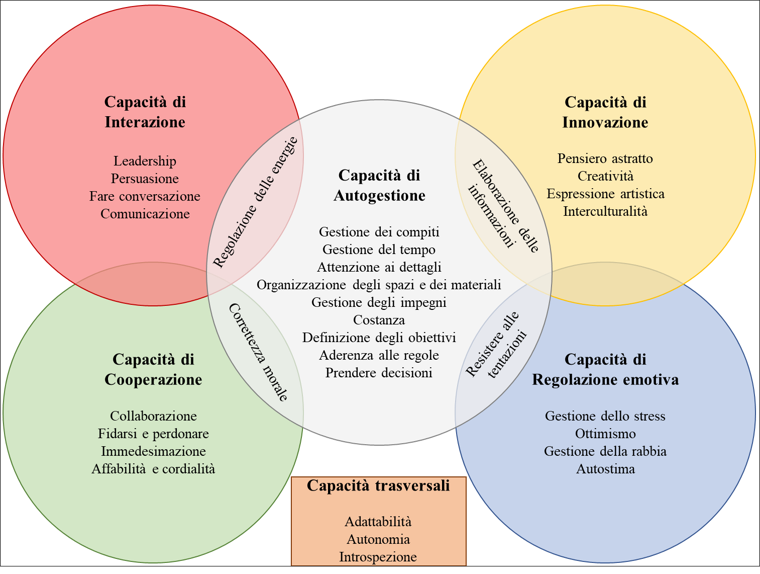

Cumulative, open, and accessible.
A living systematic review and meta-analysis for SEB skills
Background
Soft skills
“Noncognitive skills, a construct that nearly everyone can agree is important but no one can agree on how to measure.” (Harden, 2021).
Heckman: (Heckman and Kautz 2012)
PISA: (e.g., OECD 2017)
NRC: (Robles 2012)
MUR: (Ministry of Education, University and Research, MIUR 2018)
EU: (European Commission 2016)
Putting things together
What they are:
Qualities that are beneficial to the individual and their social partners
Expressed mostly in relevant situation
Distinct from measured intelligence
Potentially responsive to interventions
What they are NOT:
- Personality traits
How to organize them
Despite the differences between these models, their key areas of overlap resemble the Big Five personality traits in terms of their social, emotional, and behavioral content.
Breadth
Facet-level constructs
Allow researchers to readily compare findings regarding skills and traits
From soft to SEB (social, emotional, and behavioral) skills
These represent the abilities to establish and maintain social relationships, regulate emotions, and effectively manage behaviors toward goals and learning and mainly fall into five areas (Soto, Napolitano, and Roberts 2021; Napolitano et al. 2021) that resemble the Big Five.
- Self-management skills
- Social engagement skills
- Cooperation skills
- Innovation skills
- Emotional resilience skills
Conscientiousness
Extraversion
Agreeableness
Openness
Emotional stability
From soft to SEB (social, emotional, and behavioral) skills

Assessing SEB skills

This approach is designed to better align the measurement method with the construct being assessed.
Rationale
State of the things
New opportunities
- We finally have a new integrative and systematic framework
- This framework offers a new measurement tool that should better measure skills
- This framework allows for a distinction between skills and traits
Old problems
It is hard to remain up-to-date with the literature
Meta-analysis and reviews are static, slow, and specific
HOW CAN WE MAKE THIS NEW LINE OF RESEARCH TRULY RELIABLE, ACCESSIBLE, AND SCIENTIFIC?
The idea
A living systematic review and meta-analysis: By creating an adaptable infrastructure for evidence integration, we hope to support more transparent, efficient, and rigorous scientific progress. This initiative lays the foundation not only for SEB research but also as a model for other emerging fields to follow—advancing toward a new era of living meta-synthesis in psychology.
Structures and aims
‘Systematic’ review: Building a continuously updated and systematic organization of our knowledge about SEB skills, descriptively synthesizing and organizing all the studies conducted that focus on the SEB framework.
Measurement
Nomological validity
Development
Applied settings
….
Meta-analysis: Develop a meta-analytical database of correlational studies that may facilitate the synthesis of evidence about the association between SEB skills, related constructs, and outcomes.
Classic correlational synthesis:
SEM synthesis using metaSEM:
Open materials: Provide an open-access, regularly updated database of all relevant publications, including metadata on study design, samples, measures, and data availability
Method
Search strategy (WOS + Scopus)
Seminal theoretical papers
- Taking Skills Seriously: Toward an Integrative Model and Agenda for Social, Emotional, and Behavioral Skills (Soto, Napolitano, and Roberts 2021)
Measurement
An Integrative Framework for Conceptualizing and Assessing Social, Emotional, and Behavioral Skills: The BESSI (Soto et al. 2022)
The Behavioral, Emotional, and Social Skills Inventory (BESSI): Psychometric Properties of a German-Language Adaptation, Temporal Stabilities of the Skills, and Associations with Personality and Intelligence (Lechner et al. 2022)
The Italian Behavioral, Emotional, and Social Skills Inventory (BESSI-I) (Feraco et al. 2024)
The Behavioral, Emotional, and Social Skills Inventory: A Spanish Adaptation and Further Validation in Adult Population (Postigo et al. 2024)
Short measurement versions
- Assessing Social, Emotional, and Behavioral Skills in Just a Few Minutes: 96-, 45-, and 20-Item Short Forms of the BESSI (Sewell et al. 2024)
Updating the search
| Database | String |
|---|---|
| Scopus |
|
| Web Of Science |
|
Eligibility criteria - review
Review eligibility: Citations are included in the review synthesis if:
The main topic of the paper is SEB skills.
The paper provides substantial theoretical and quantitative information about SEB skills.
Exclusion from the review. Citations are completely excluded from the review synthesis if:
They were not focusing on or adopting the SEB skill framework or emerging frameworks based on it. For example, a study focusing on the development of the Big Five should be excluded although it cites the reference papers. However, if it focuses on the development of the Big Five but also collects side data using the BESSI, it will be included in the meta-analysis and -if it also interprets and discuss SEB results- in the review;
They were published as books;
They were published in languages that were not comprehensible for the authors;
Referer to the SEB framework, but focus on different frameworks, such as the OECD or CASEL.
Eligibility criteria - meta-analysis
Meta analysis eligibility. Citations are included in the meta-analysis if:
The study assessed SEB skills using a validated skill-based assessment referencing to the SEB framework;
The study referred to original data that are not already reported in other included studies;
The population study was either the general population or a clinical population with mild/moderate mental health issues.
Exclusion from the meta analysis. Citations are excluded if:
It is a qualitative study;
The study does not measure participants’ SEB skills;
SEB skills were measured with a non-validated measure or with a measure that does follow the SEB framework;
The study does not report correlations at baseline or the data could not be reduced to correlations nor obtained by the authors;
It was a study whose data were previously used in a paper already included in the meta-analysis;
The study focused on severe mental health issues (e.g., schizophrenia, bipolar disorder);
They were published in languages that were not comprehensible for the authors.
Outcomes
This review is not limited to any outcome, but all possible outcomes will be coded and included. Outcomes will be treated in the following way:
Broad category: Each outcome is assigned to the a broad category. Examples might be skills, mental health, school, demographic variables, job, personality traits…
Second-level category: Subsequently, within each broad category, each outcome is assigned to a more specific category. For instance, the broad ‘traits’ category may include the big five, hexaco, character strengths. School may include academic achievement, learning factors.
Specific construct: Finally, each construct is labeled with its own construct label (e.g., extraversion, self-management).
Results
xxxx
Open questions
How do we collaborate without using word files?
Preregistration
Databases
String
Criteria for review and meta-analysis
Publication
Who could accept this and in which format?
Why should we publish it?
Long-term feasibility
Can I (we) keep updating it forever?
Can we involve the community? How?
Next steps
Involve the BESSI team
Finalize the preregistration
Finalize the app
Possibly find a way to add modules for future development
Longitudinal / intervention data
Non-correlational designs
References
A living systematic review and meta-analysis for SEB skills